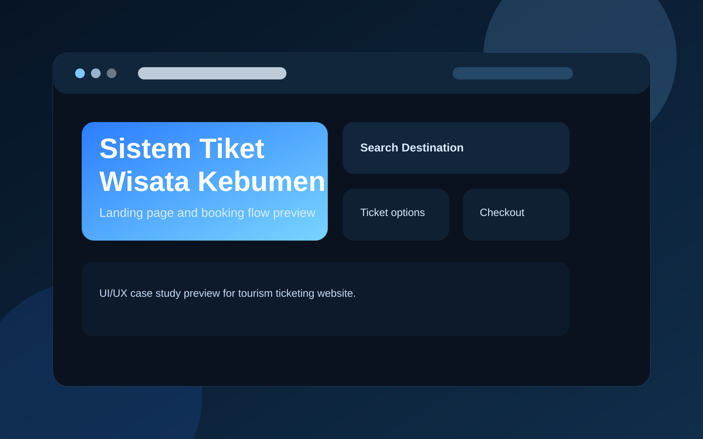
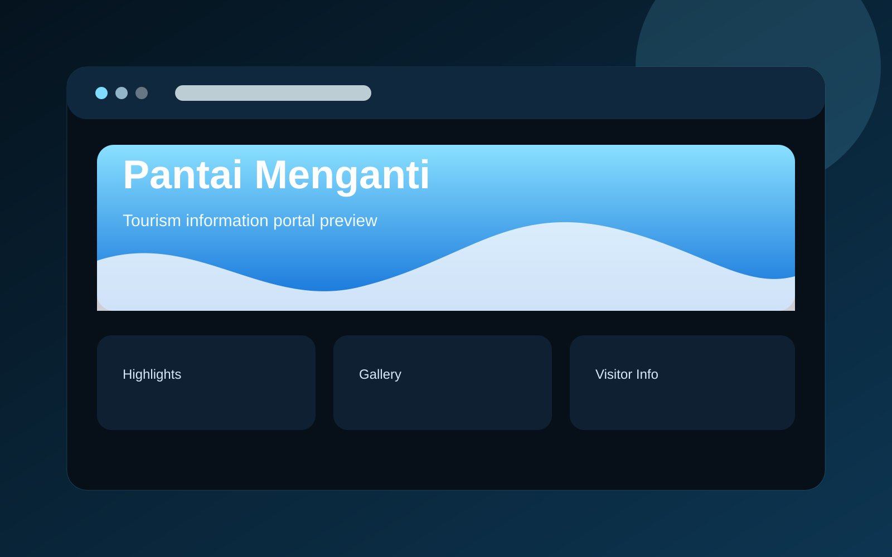
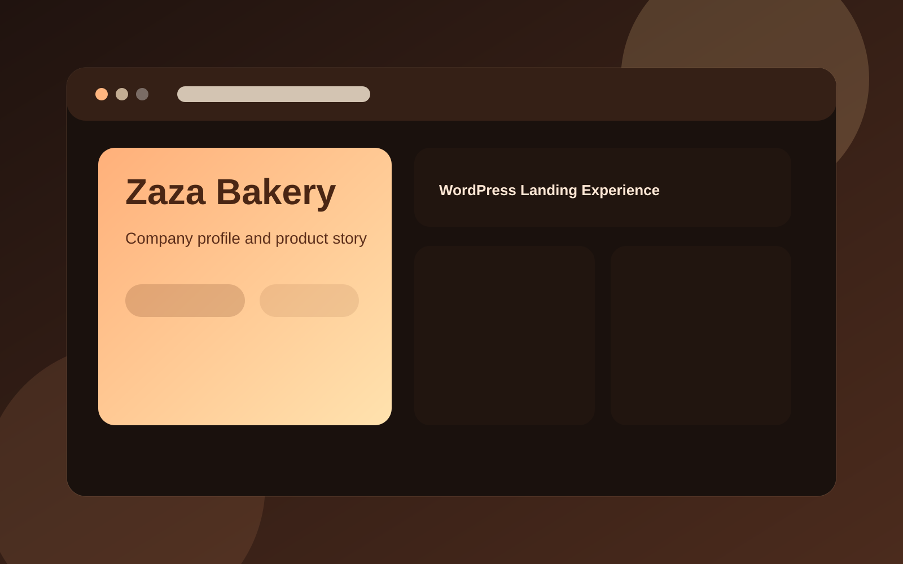
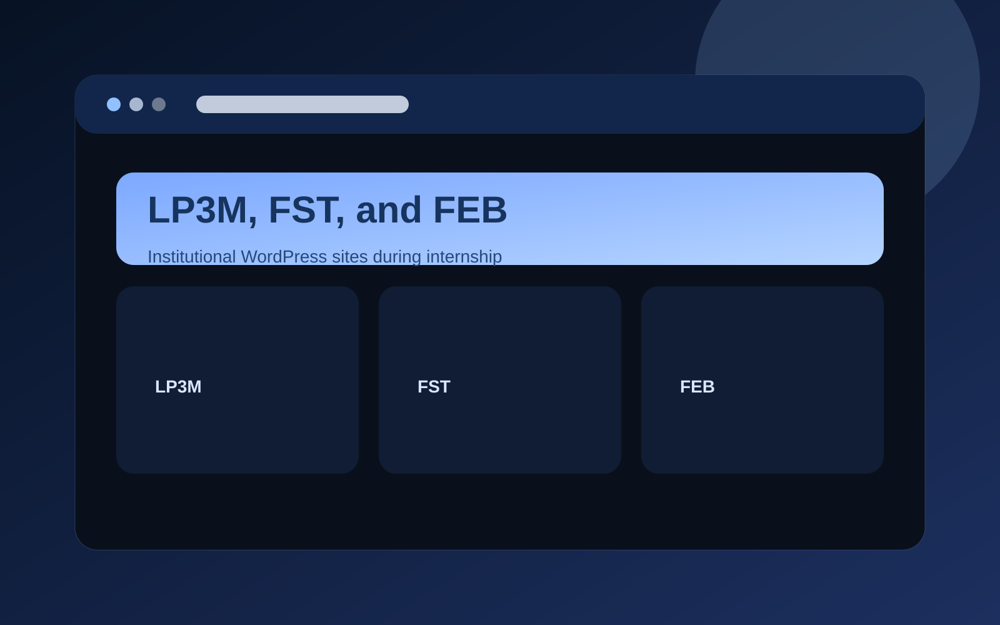
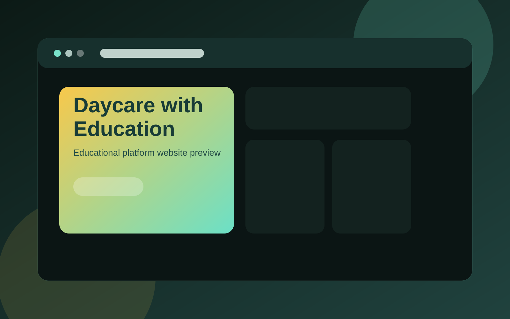

UI/UX PreviewSistem Tiket Wisata Kebumen
Membuat desain UI/UX website pembelian tiket online wisata di Kebumen sebagai project pengembangan web.
Gallery ini memakai card project yang sama seperti desain awal dan siap ditambah item baru.

UI/UX PreviewMembuat desain UI/UX website pembelian tiket online wisata di Kebumen sebagai project pengembangan web.

Website PreviewMembuat website informasi terkini Pantai Menganti Kebumen untuk menyajikan informasi wisata secara lebih jelas.
 Laravel App
Laravel AppMembangun aplikasi manajemen rapat BEM UBP berbasis website menggunakan framework Laravel.

WordPress SiteMembuat website company profile toko roti Zaza Bakery berbasis WordPress untuk kebutuhan promosi bisnis.

Internship BuildSaat internship, saya membuat website LP3M, Fakultas Sains dan Teknologi, serta Fakultas Ekonomi dan Bisnis berbasis WordPress.

Education SiteMembuat website Daycare with Education saat mengikuti Studi Independen Bersertifikat di PT Maleo Edukasi Teknologi.